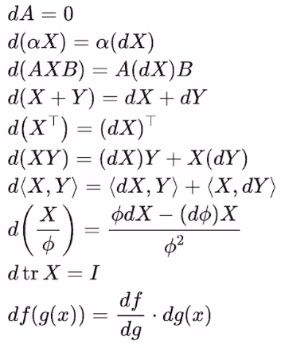
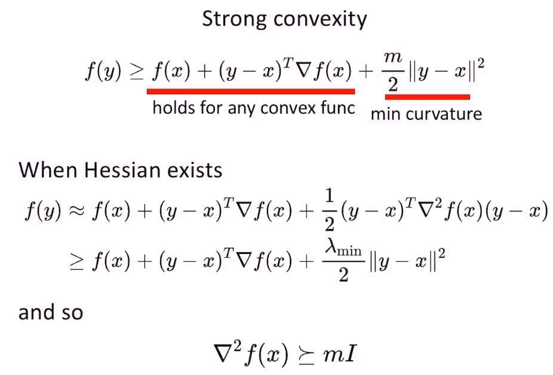
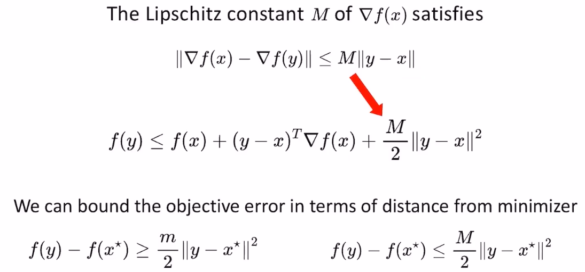
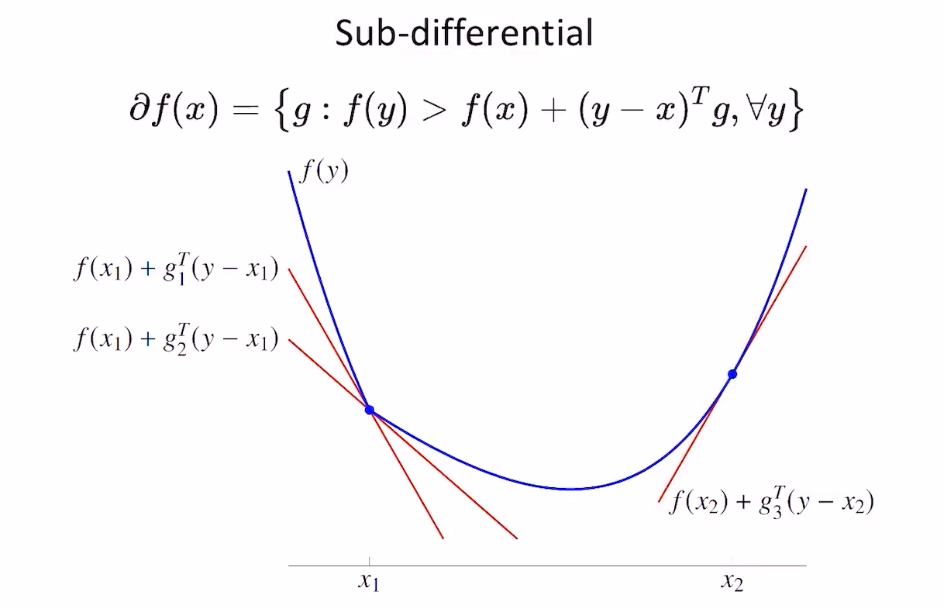
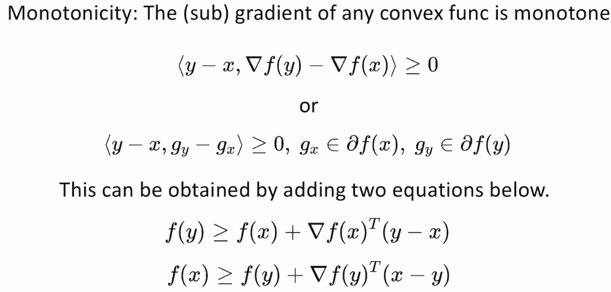

参考书籍
-
最优化：建模、算法与理论
- 中文版
-
Numerical Optimization
- 理论很全
- 关注实数在程序中的表示方法导致的数值稳定性问题，给了很多工程上的实践，帮助读者写出更加鲁棒稳定的算法
-
Lectures on Convex Optimization
- 理论清晰，涵盖很全
-
Lecture on Modern Convex Optimization
- 对Conic Programming有比较好的分析和应用
优化问题
-
一般形式
- $$min(f(x))$$
- $$s.t.g(x)\leq 0, h(x)=0$$
-
问题有解的条件
- \(f(x)\) is lower bounded(有下界)
- 在\(x\)的取值范围内，\(f(x)\geq \alpha\)
- \(f(x)\) is bounded level set
- 满足\(f(x)< \beta \)的\(x\)的取值有上下界，\(f(x)=\frac{1}{x},(x>0)\)就不满足，\(x\)到无穷大时\(f(x)\)最小
- \(f(x)\) is lower bounded(有下界)
-
机器人领域中常见的优化问题
- SLAM: Nolinear Least Squares
- Trajectory: Nolinear Program
- Registration: Semi-Definite Program
- Time Optimal Path Parameterization: Second-Order Conic Program
凸集
- 如果集合内的任意两点的连线仍然在集合内，则集合是一个凸集
- convex hull: 点集中所有点的convex combinations的并集
- 常见的凸集合
- hyperplane: \(Ax=b\)
- half-space: \(Ax\geq b\)
- sphere: \(\left | x-x_{0} \right |=b\)
- ball: \(\left | x-x_{0} \right |\leq b\)
- polynomials: 凸包
- cone: 锥(不一定是凸的)
- 半定锥(一定是凸的)
- 凸集的交集一定是凸的
- 凸集的并集不一定凸
- 凸集的叉乘一定是凸
函数的高阶导数
- 一阶导数: gradient
- 二阶导数: hessian
- hessian是gradient的jacobian
矩阵求导
- 网址

凸函数及其性质
-
$$f(ax+(1-a)y)\leq af(x)+(1-a)f(y)$$
- 如果严格<，称为strictly convex function
- 凸函数一定有convex sub level set
- quasi-convex(拟凸函数)
- $$f(x)=log(\left | x \right |+1)$$
- 拟凸函数的线性加和不一定还是拟凸函数，但凸函数的线性加和肯定是凸函数
- 凸函数的局部最小值一定是全局最小值
- 凸函数的局部最小值的集合一定是凸集
- 如果一个光滑函数的Hessian矩阵(二阶导)是半正定的(\(y^{T}Hy\geq 0\))，它一定是凸函数
- 对非凸函数而言，其局部极小值点处的二阶导一定是半正定的（正定和不定都是针对对称矩阵而言的）
- 如果函数在某点的一阶导数是0，但Hessian不定（特征值有正有负），该点为鞍点。
- 反过来不成立，比如\(z=x^{4}-y^{4}\)在(0, 0)处Hessian不是不定的，但它是个鞍点
- 可微凸函数一定在其任一个点的线性近似的上方，这意味着梯度为0的点就是全局极小值
- 如果函数的Hessian严格正定，最小特征值大于0，则为强凸函数，收敛速度快

- 可以看到，强凸函数比凸函数在定义上更加严格，比线性近似的上方还多了一个min curvature项(m>0)
- 强凸 > 严格凸 > 凸
- 可以通过将非强凸函数构造为强凸函数加速优化速率
- lipschitz常数：任意两个点的梯度差值不会比两个点的距离的常数倍来的大

- lipschitz常数和强凸都可以用来刻画可微凸函数的凸性
- 从上图可以看到，强凸性描述了凸函数的下界；lipschitz常数描述了凸函数的上界(如果一个函数的lipschitz常数存在，就可以找到一个二次函数来bound住函数的上界)
- 条件数
- 计算方式
- 对光滑函数而言，Hessian矩阵的SVD分解得到的最大奇异值除以最小奇异值就是该函数的条件数
- 对可导但不一定存在Hessian的函数而言，条件数\(\kappa =\frac{M}{m}\)，这里的M就是lipschitz常数，m就是强凸性的常数
- 对任意函数而言，可以通过绘制函数的等高线，将等高线拟合成一个椭圆，椭圆的长轴除以短轴就是该函数的条件数
- 用处
- 可以用来判断是否需要用到函数的高阶信息
- 有些算法对条件数很小的凸函数可以收敛的很快，对条件数较大的凸函数收敛比较慢，此时就需要用函数的曲率(高阶)信息更快收敛到最优解
- 计算方式
- 次梯度

- 上图中，函数在\(x_{1}\)处不可微，该点处的导数有很多个，以左导数和右导数形成区间的导数集合就是次梯度
- 对于可微凸函数而言，判断最优点的条件是导数为0；对于不可微函数，判断不可微点是否是最优解就看该点的次梯度有没有把0包含在内
- 光滑函数的导致的负方向一定是函数值下降的方向，但沿着次梯度集合中某个方向的反方向走不一定让函数值下降；必须是次梯度集合中模长最小的那个方向的反方向才可以保证函数值的下降
- 梯度单调性

- 牛顿法求解无约束优化的时候，利用梯度单调性可以让算法更稳定
- 凸函数的很多operation是可以保留其凸性的
- 加权和(权重>0)
- 范数
- 仿射变换
- point-wise max
- 绝对值
- 最大特征值
- 无穷范数
- 凸函数举例
-
$$f(x)=trace(A^{T}x)$$
- 本质上是线性操作
-
$$f(x)=max\left \| x-y \right \|$$
- 本质上是point-wise max，找凸集合距离x最远的点
-
$$f(x)=min\left \| x-y \right \|$$
- 虽然是point-wise min，但也是凸函数，找凸集合距离x最近的点
-
$$f(x)=\left \| b+A_{i}x_{i} \right \|$$
- 本质上是仿射变换
-
$$f(x)=min_{y}g(x,y)$$
- \(g(x,y)\)是凸的
-
$$f(x)=trace(A^{T}x)$$
评价数值优化算法的指标
- 收敛速度（迭代次数）
- 对不同函数的收敛稳定性
- 每次迭代的计算量